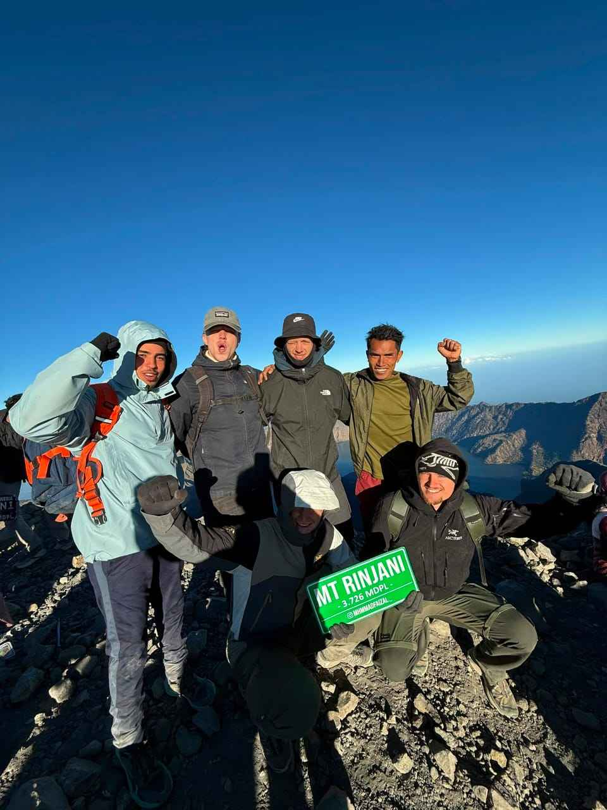
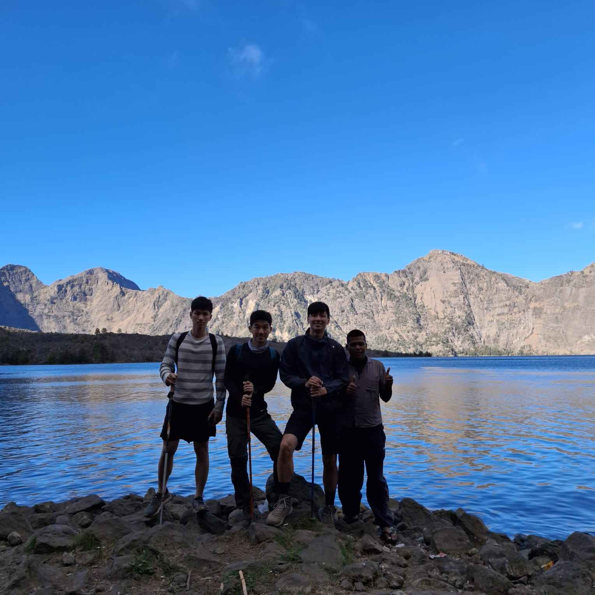

Rinjani Join Group Trek: The Complete Guide for Budget Travellers
How a Rinjani sharing group works, why it costs less, what is included and how to join a group for your date.
Honest tips for your Mount Rinjani join group trek – written by someone who carried the bags and guided the groups for almost ten years.
How a Rinjani sharing group works, why it costs less, what is included and how to join a group for your date.

An honest comparison of price, comfort, flexibility and atmosphere – from someone who guided both for almost ten years.

What to bring for hot days and freezing summit mornings – and what you can rent from us from USD 2.

Dry season, rainy season and national park closures – when to plan your Rinjani trek.

Ride to Senaru or Sembalun yourself and join the group from USD 118 – same guide, same tents, same food.

Even with budget prices, every guide and porter who carries trash down gets a USD 3 reward from us.
Tell us your date, how many people, and whether you want Trek Only or Standard. We reply fast on WhatsApp.